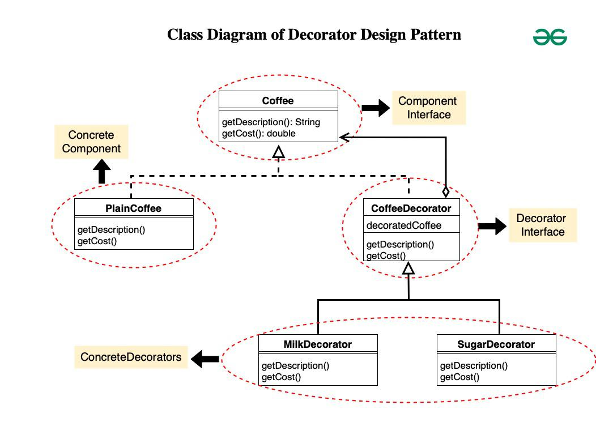

The Decorator Design Pattern is a structural design pattern that allows behavior to be added to individual objects dynamically, without affecting the behavior of other objects from the same class. It involves creating a set of decorator classes that are used to wrap concrete components.

This is the interface Coffee representing the component. It
declares two methods getDescription() and
getCost() which must be implemented by concrete
components and decorators.
// Coffee.java
public interface Coffee {
String getDescription();
double getCost();
}
PlainCoffee is a concrete class implementing the Coffee
interface. It provides the description and cost of plain coffee
by implementing the getDescription() and
getCost() methods.
// PlainCoffee.java
public class PlainCoffee implements Coffee {
@Override
public String getDescription() {
return "Plain Coffee";
}
@Override
public double getCost() {
return 2.0;
}
}
CoffeeDecorator is an abstract class implementing the Coffee
interface. It maintains a reference to the decorated Coffee
object. The getDescription() and
getCost() methods are implemented to delegate to
the decorated coffee object.
// CoffeeDecorator.java
public abstract class CoffeeDecorator implements Coffee {
protected Coffee decoratedCoffee;
public CoffeeDecorator(Coffee decoratedCoffee) {
this.decoratedCoffee = decoratedCoffee;
}
@Override
public String getDescription() {
return decoratedCoffee.getDescription();
}
@Override
public double getCost() {
return decoratedCoffee.getCost();
}
}
MilkDecorator and SugarDecorator are concrete decorators
extending CoffeeDecorator. They override
getDescription() to add the respective decorator
description to the decorated coffee’s description. They override
getCost() to add the cost of the respective
decorator to the decorated coffee’s cost.
// MilkDecorator.java
public class MilkDecorator extends CoffeeDecorator {
public MilkDecorator(Coffee decoratedCoffee) {
super(decoratedCoffee);
}
@Override
public String getDescription() {
return decoratedCoffee.getDescription() + ", Milk";
}
@Override
public double getCost() {
return decoratedCoffee.getCost() + 0.5;
}
}
// SugarDecorator.java
public class SugarDecorator extends CoffeeDecorator {
public SugarDecorator(Coffee decoratedCoffee) {
super(decoratedCoffee);
}
@Override
public String getDescription() {
return decoratedCoffee.getDescription() + ", Sugar";
}
@Override
public double getCost() {
return decoratedCoffee.getCost() + 0.2;
}
}